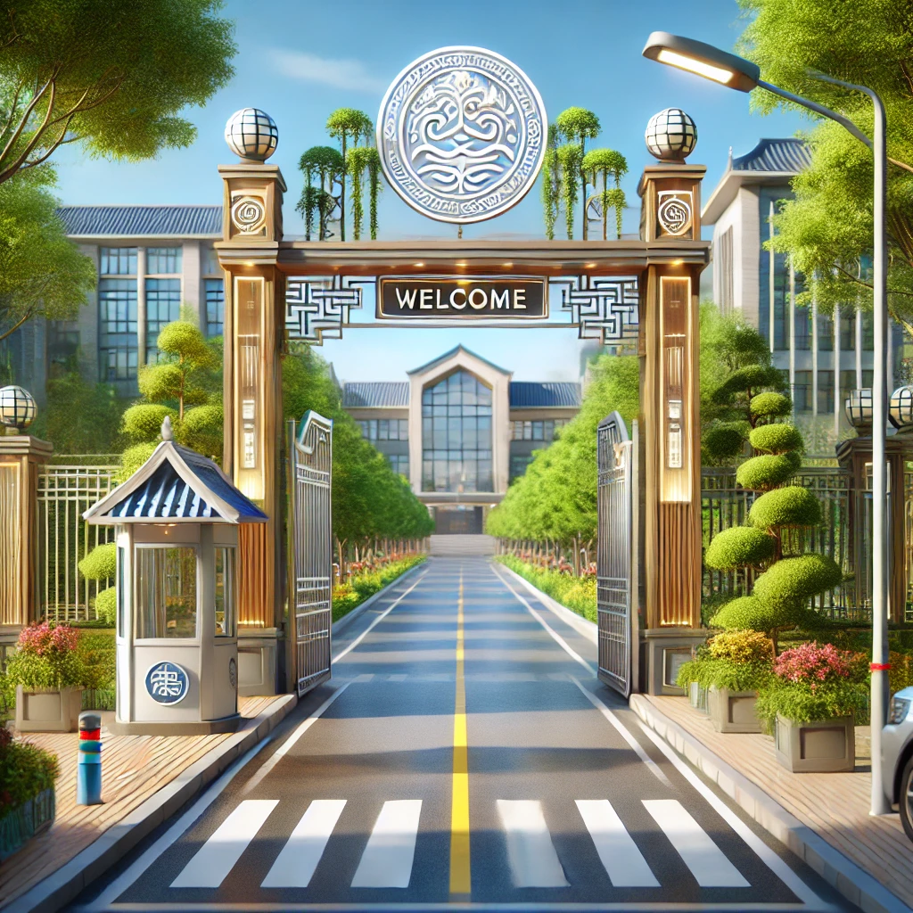

About Joe-Rose Academy

A Legacy of Excellence in Education
Joe-Rose Academy is a prestigious institution dedicated to nurturing young minds and preparing them for a future of limitless possibilities. Founded on the principles of academic excellence, creativity, and innovation, we offer a world-class learning experience that integrates modern educational methods with a scientifically grounded approach.
Our Vision & Mission
Vision: To be a globally recognized institution that fosters creativity, critical thinking, and academic brilliance in students.
Mission: To provide a scientifically based education using the best I.T facilities, a 100% British curriculum, and diverse extracurricular activities, ensuring that students are not only knowledgeable but also innovative, confident, and prepared for the future.
A Comprehensive Learning Journey
- Early Years: Focuses on foundational learning, creativity, and social development.
- Nursery School: Builds literacy, numeracy, and communication skills through exploration.
- Primary School: Offers a structured academic curriculum with modern teaching techniques.
- Secondary School: Prepares students for higher education with advanced academic programs.
Our Unique Approach to Learning
Joe-Rose Academy integrates scientifically-backed teaching methods with a technology-driven approach. Our academic programs emphasize:
- 21st-Century Skills: Critical thinking, problem-solving, and creativity.
- Innovative Learning Environments: Digital smart boards, research-based learning.
- Personalized Attention: Small class sizes to maximize student potential.
- Practical and Hands-on Learning Methods.
State-of-the-Art Facilities
Joe-Rose Academy is equipped with world-class facilities, including:
- Ultra-modern classrooms with electronic boards.
- Advanced Science Labs for hands-on experiments.
- I.T Laboratories with cutting-edge technology.
- A vast playground and sporting facilities.
- A secure and serene learning environment.
Extracurricular Activities & Skill Development
- Sports & Athletics (Football, Basketball, Swimming).
- Creative Arts (Music, Drama, Dance, Visual Arts).
- Leadership Programs (Debates, Public Speaking, Entrepreneurship).
- STEM Clubs (Robotics, Coding, Science Fairs).
A Safe and Conducive Learning Environment
Joe-Rose Academy ensures the safety, well-being, and happiness of students through:
- 24/7 security surveillance.
- A well-maintained, clean, and safe campus.
- Guidance and counseling services.
Contact Us
📍 Address: Opposite GTBank, Old Otukpo Road, Makurdi, Benue State, Nigeria
📞 Phone: 07061311794